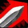
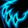

Système visuel · version équilibrée
Grimoire interactif
Le décor crée l'émotion, les composants assurent la maîtrise. Une seule couleur d'action, l'or ; les couleurs de classe ne servent qu'à l'identité des classes.
Palette
Contrastes mesurés sur le panneau #122235 (WCAG : 4,5:1 minimum pour le texte courant).
Typographie
Trouve ta classe
Cinzel 700 · titres 30 à 46 px, capitales romaines, nobles sans être massives
Question 3 / 6 · Mes choix
Cinzel 600 · libellés de section 12 à 16 px, interlettrage 0,14 à 0,22 em
Chaque joueur a sa façon de jouer. Découvre les spécialisations qui te correspondent.
Source Sans 3 · texte 15 à 18 px, interligne 1,45 à 1,5
100 · 76 · 73 · 3/5
JetBrains Mono · scores et notes à chasse fixe, pour comparer d'un coup d'œil
Cadres
A · Héroïque
Questionnaire, classement, parcours actif. Bordure dégradée or ombré → or clair → bronze, filet intérieur, coins fins, halo léger, ombre portée.
B · Noble
Mes choix, aperçu, étapes, sous-panneaux. Même langage, filet or à 38 %, sans ornements d'angle.
C · Fonctionnel
Cartes de réponse, pastilles, petits réglages. Contour discret ; l'or n'apparaît qu'à la sélection.
États des composants
Classes et notes
Icônes officielles de Blizzard (serveur d'icônes du jeu, 56 px) dans un anneau à la couleur de la classe, éclaircie pour le fond sombre ; halo de la même couleur en Équilibré et en Épique.


Réponses : une icône du jeu par choix (point d'interrogation, Éclair de givre, Charge, Forme de félin), anneau et halo or à la sélection.Mouvement
Aucune boucle, aucun scintillement. Tout s'éteint avec « Réduire les animations ».
Visuels officiels
 Arbre-monde · défaut
Arbre-monde · défaut Vallée de nuit
Décor d'accueil : deux plans de la cinématique
Cinematic Stills 5 et 2, en 3840 × 1600 au format 2,4:1, réduits sans recadrage en WebP 2400 × 1000, moins de 80 Ko. Voile sombre à gauche pour le texte, fondu vers le fond en bas, braises fixes.
Vallée de nuit
Décor d'accueil : deux plans de la cinématique
Cinematic Stills 5 et 2, en 3840 × 1600 au format 2,4:1, réduits sans recadrage en WebP 2400 × 1000, moins de 80 Ko. Voile sombre à gauche pour le texte, fondu vers le fond en bas, braises fixes.
 Gantelet · priorités
Gantelet · priorités Darkspear · comparer
Bandeaux : une image par section
Cinematic Still 11 et Darkspear Islands, en WebP 1920 px. Voile de 70 à 95 % du côté du texte : un titre ne repose jamais sur une zone claire.
Darkspear · comparer
Bandeaux : une image par section
Cinematic Still 11 et Darkspear Islands, en WebP 1920 px. Voile de 70 à 95 % du côté du texte : un titre ne repose jamais sur une zone claire.